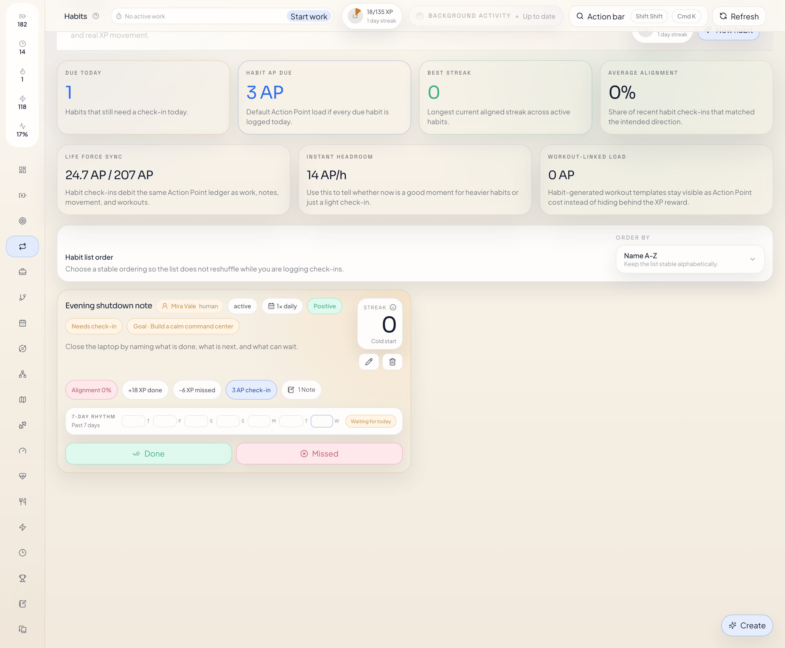
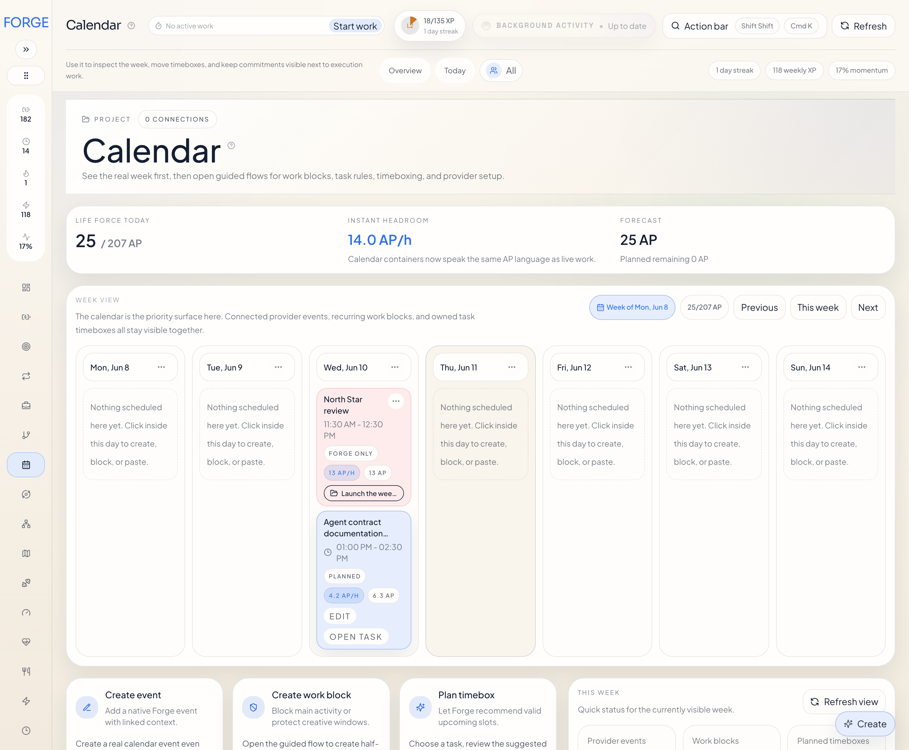
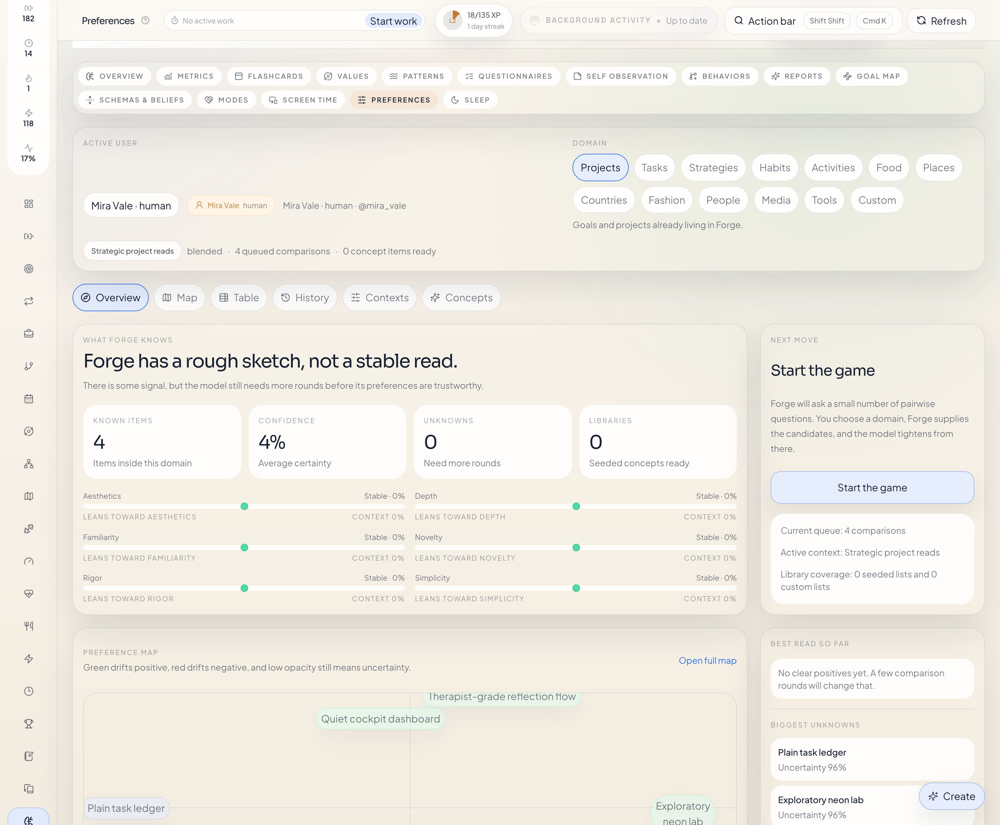
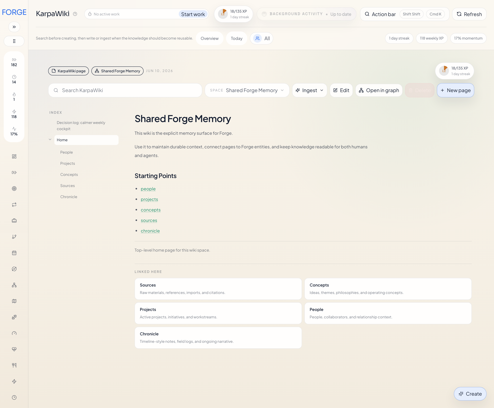
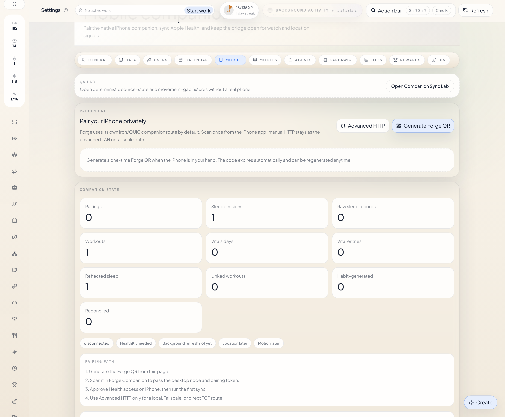

Goals to tasks
Goals, projects, tasks, notes, and links stay attached to the same graph.
Feature Reference
Use the home page for installation. Use this page when you need a concrete description of the Forge data model and product surfaces.
Planning, live work, wiki memory, health review, preferences, Psyche, multi-user ownership, and agent adapters.
Planning
Forge is not only storage. It includes the execution model and live work tracking.
Goals, projects, tasks, notes, and links stay attached to the same graph.
Task runs track real live work. Start, focus, pause, complete, and release are separate actions.
Work adjustments add or remove minutes on existing work without inventing a fake timer session.



Strategies
Use a strategy when work has sequence, branching, or a clear end state.
Strategies use a directed acyclic graph of project and task nodes. They can branch and converge, but they do not loop.
Forge computes plan progress from node state and target state so the strategy stays measurable and reviewable.
Preferences
Preferences is a first-class workspace. It learns from explicit choices instead of vague notes.
The main interaction is a focused pairwise comparison flow with clear left or right choices, strength, tie, and skip.
Favorite, must-have, bookmark, later, neutral, and veto signals can be applied directly to an item.
Preferences can learn over Forge entities such as projects, tasks, strategies, and habits, or over seeded concept domains.

Wiki
The wiki is the long-form memory layer. It is not a generic note dump.
Pages live in spaces, keep stable slugs, and show backlinks and Forge links.
Text, semantic, and hybrid search are built in. Health checks expose unresolved links, orphan pages, and missing summaries.
Ingest jobs run in the background, report progress, and stage review candidates before publishing.

Health
Sleep sessions and workout sessions are structured records, not generic notes.
Review recent nights, score, stage breakdown, regularity, and linked context.
Review workout volume, effort, type, and habit-generated sessions in the same surface.
Add notes, tags, and Forge links directly to a sleep or workout session.
iPhone Companion
The companion app is the mobile bridge for HealthKit-backed sleep and workout imports into Forge.
The mobile app pairs to one Forge runtime, then continues syncing sleep and workouts into that same local system.
The goal is simple: capture device-native sleep and workout data in the background, then review and enrich those records inside Forge.

Multi-user
Ownership stays explicit while links across owners stay valid.
Records can belong to a human or a bot through
userId.
Agents can read one owner, several owners, or all visible users with explicit scope.
A human-owned project can point to bot-owned work without losing ownership clarity.
Agent Adapters
The adapters expose the curated Forge tool surface instead of the full internal API.
Published plugin with runtime commands, health checks, route parity tests, and UI handoff.
Native Python plugin with the same product model and shared runtime expectations.